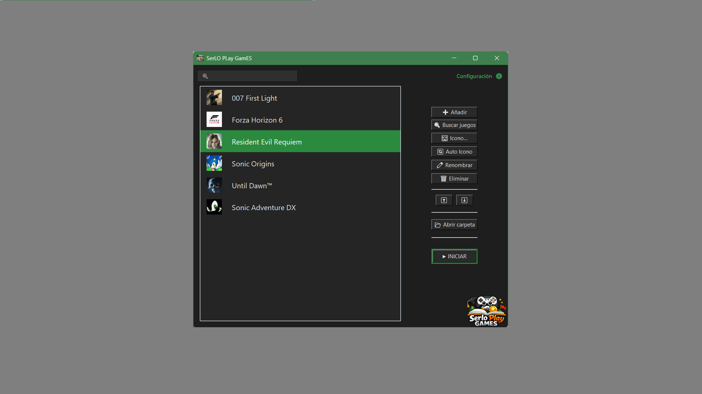
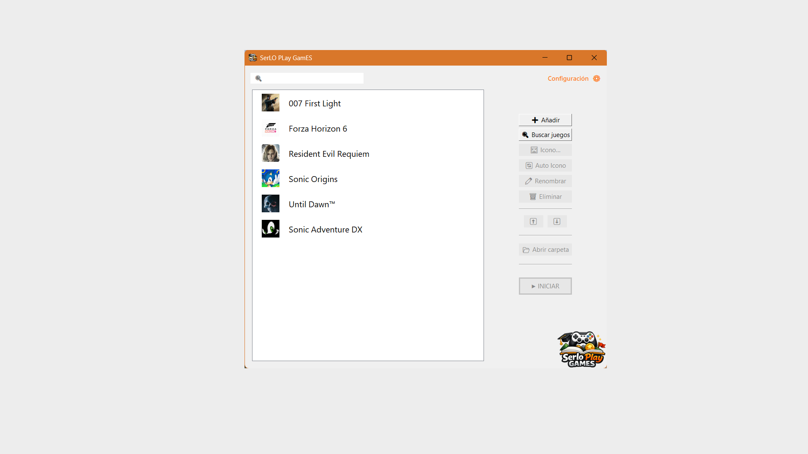
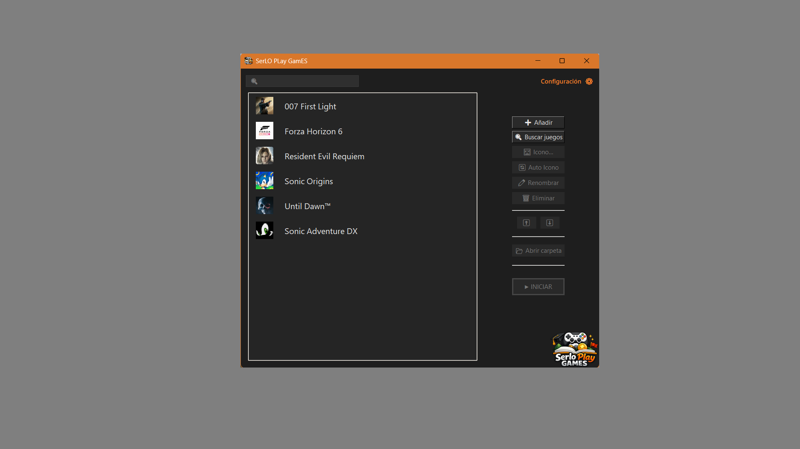
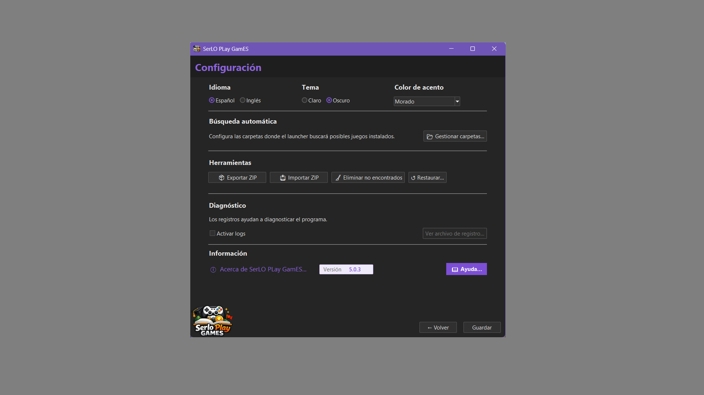

🧩 ¿Qué es?
SerLO PLay GamES es un launcher para Windows que te permite organizar, lanzar y personalizar tus juegos, aplicaciones y accesos directos desde un único lugar.
Es compatible con archivos .exe, accesos directos .lnk y accesos directos a Internet .url, incluyendo compatibilidad con Steam.
Está pensado para centralizar y simplificar el acceso a tus juegos, aplicaciones y accesos directos favoritos con una interfaz ligera, clara, fácil de usar y con búsqueda automática de juegos instalados.
✨ Novedades de la versión 5.0.3
- 🎮 SerLO PLay GamES es completamente gratuito, sin licencias ni activaciones.
- ⚙️ Configuración reorganizada, con secciones y controles mejor distribuidos.
- 🛠️ Mejorada la estabilidad.
🖼️ Capturas

Añade, organiza y ejecuta tus juegos, aplicaciones y accesos directos desde un solo lugar.

Tema claro con una interfaz sencilla y ordenada.

Tema oscuro para una experiencia visual más cómoda.

Desde Configuración también puedes cambiar el idioma, el tema, el color de acento y las carpetas de búsqueda.
Capturas reales de SerLO PLay GamES. Los nombres y logotipos de videojuegos pertenecen a sus respectivos propietarios y su aparición es únicamente ilustrativa.
⚙️ Cómo funciona
- Instala SerLO PLay GamES gratuitamente desde Microsoft Store; no necesitas licencias ni activaciones.
- Puedes buscar juegos instalados automáticamente y elegir cuáles quieres añadir.
- También puedes añadir juegos, accesos directos y aplicaciones manualmente.
- Permite organizar, renombrar, reordenar y personalizar tus elementos.
- Desde Configuración también puedes cambiar el idioma, el tema, el color de acento y las carpetas de búsqueda.
🔄 Cómo se actualiza SerLO PLay GamES
SerLO PLay GamES se instala y actualiza exclusivamente desde Microsoft Store.
Microsoft Store gestiona las actualizaciones de forma automática o permite buscarlas manualmente. Normalmente se conservan tus juegos y ajustes al actualizar.
❤️ Apoya SerLO PLay GamES
SerLO PLay GamES es totalmente gratuito. Si te gusta, puedes apoyar su desarrollo para que siga avanzando.
❤️ Apoyo📬 Ayuda y contacto
Si necesitas ayuda o tienes cualquier consulta, puedes ponerte en contacto desde aquí.
Abrir formulario de contacto